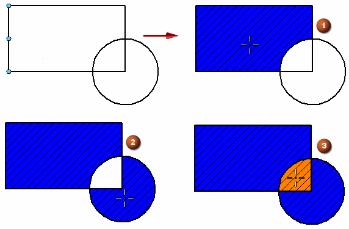

Place a fill
You can place a fill only inside a closed boundary.
-
Choose the Fill command .
Tip:In 3D environments, highlight a sketch plane that contains the closed sketch or boundary that you want to fill, and then press F3 or click the lock symbol to lock the sketch plane before selecting the Fill command.
See the Help topic, Lock or unlock a sketch plane.
-
On the Fill command bar, click the settings you want.
-
Click inside each closed boundary that you want to fill.

-
To make a large area fully visible: Zoom out using the Zoom and Zoom Area commands, and then select the area. Now, you can zoom in and then click to fill in the selected area. To re-display the Fill command bar, you may need to click the Fill command again.
-
When you change a filled boundary by drawing another element, the fill does not automatically update to fit the new boundary. You can refill the new boundary by selecting the fill handle, then clicking Redo Fill on the command bar to apply the fill to the new boundary. You can also refill an area by dragging the handle to the new area.
-
You can change the properties of a filled object by selecting the area that is filled and then choosing the Properties command from its shortcut menu. This displays the Fill Properties dialog box.
-
You can modify an existing fill style or create a new one with the Style command.
-
The Fill command does not always work on non-orthogonal views. If you place fills in such views, manual editing might be necessary to close boundary gaps.
How do I
Format a fillRefill a modified boundary
Learn more
Applying colors and patterns to closed boundariesLook up more details
Fill commandFill command bar
Fill Properties dialog box